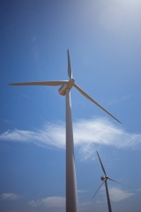
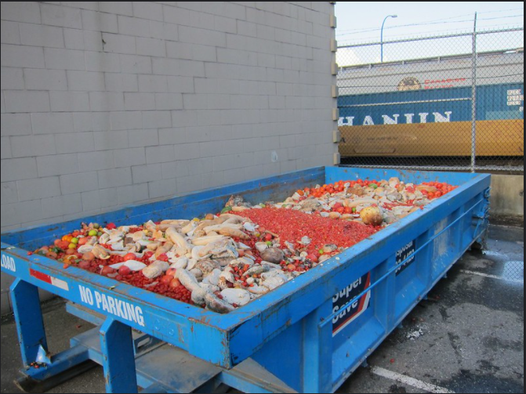
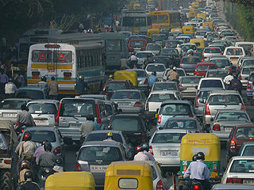

2. Buscando soluciones: nuestro papel como parte de la industria
Es posible hacer algo para corregir todos estos problemas medioambientales. De hecho ya hemos conseguido en el pasado importantes éxitos, como reducir las peligrosas emisiones de plomo o el agujero de la capa de ozono, una capa de la atmósfera que reduce las radiaciones solares. El objetivo es un desarrollo sostenible, es decir, hacer compatible el desarrollo económico con la conservación del medio ambiente.
| Para ello es preciso hacer un uso más eficiente de los recursos (agua, materias primas, fuentes de energía...), fomentando el desarrollo de tecnologías y procesos industriales más eficientes. Aparte de reducir el consumo de recursos, es necesario limitar los deshechos: reducir los vertidos y sanear mejor los residuos. El aumento del reciclaje es esencial, porque permite a la vez reducir el consumo de recursos y la producción de desechos. | |
| Símbolo del reciclaje Imagen en Pixabay. Dominio público |
|  |
Pero lograr un equilibrio entre nuestro consumo, nuestros desechos y las posibilidades del medio natural requiere también que adoptemos hábitos de consumo más responsables y sostenibles. Piensa que solo con reducir a escala mundial el desperdicio de comida que llega a la basura sin consumir podríamos aumentar significativamente la disponibilidad global de alimentos. Hay que adoptar también tecnologías y procesos industriales más limpios. Para ello es esencial que se haga un uso cada vez mayor de energías renovables, que no se agotan y no contaminan: energía solar, energía eólica, etc. |
| Molino eólico Imagen en Flickr de R. Hernández González. Licencia CC BY 2.0 |
Para saber más
Mira este titular de la FAO (Organización de las Naciones Unidas para la Alimentación y la Agricultura):
"Un tercio de los alimentos producidos para el consumo humano se pierde o se desperdicia en todo el mundo, lo que equivale a cerca de 1 300 millones de toneladas al año."
Si quieres saber más sobre este problema, sus consecuencias y sus posibles soluciones puedes empezar por este documento de la FAO sobre la pérdida y desperdicio de alimentos.
|  |
| Contenedor con alimentos desperdiciados Imagen en Flickr de Stephen Rees. Licencia CC BY NC-ND 2.0 |
Una de las grandes batallas medioambientales del mundo actual es la reducción de emisiones de gases con efecto invernadero para mitigar el cambio climático. El Acuerdo de París sobre el Cambio Climático, firmado por la Organización de Naciones Unidas en 2015 establece como objetivo mantener el aumento de la temperatura media mundial con respecto a los niveles previos a la industrialización muy por debajo de los 2º C, un objetivo que ya resulta difícil de cumplir.
Con ese fin se está procurando sustituir todo lo posible las energías fósiles (carbón, petróleo) por alternativas. En el transporte se está fomentando el uso de vehículos eléctricos o el transporte público.
Se promueven también ayudas fiscales y económicas a las prácticas que contribuyan al desarrollo sostenible.
|  |
| Atasco de tráfico en Delhi (India) Imagen en Wikimedia Commons de NOMAD. Licencia CC BY 2.0 |
Otra de las líneas de actuación fundamentales para proteger el medio ambiente es la creación de espacios naturales protegidos. El objetivo es proteger ecosistemas en peligro de desaparición (bosques, humedales, fondos marinos...), salvaguardar la biodiversidad (especies en extinción como el lince ibérico) y contribuir a la buena salud de la atmósfera.
Importante
Las soluciones para corregir los problemas medioambientales creados por el ser humano incluyen:
- un uso más eficiente de los recursos;
- la adopción de hábitos de consumo más sostenibles;
- el desarrollo de tecnologías más limpias y de las energías renovables;
- la reducción de emisiones de gases con efecto invernadero;
- la creación de espacios naturales protegidos.
Como parte del sector de la industria alimentaria, es importante que nuestro obrador adopte unas BUENAS PRÁCTICAS AMBIENTALES, las cuales podemos definir como el conjunto de acciones y procedimientos diseñados para reducir el impacto ambiental que puede generar nuestra actividad.
Aunque el fin primordial sea el cuidado del medio ambiente, el mantener unas buenas prácticas ambientales traerá consigo una serie de ventajas como las que se indican a continuación:
- Reducción de costes y mejora de la productividad.
- Reducción de los residuos generados.
- Mejora de la calidad.
- Mejora de la imagen de la empresa.
Para llevar a cabo esta reducción de recursos habría que tener en cuenta determinadas acciones que permitirían disminuir el consumo. A continuación, en la tabla se pueden ver algunas de estas acciones:
| AHORRO ENERGÉTICO |
|
| AHORRO DE RECURSOS PROPIOS EL SECTOR |
|
| AHORRO DE AGUA |
|
Debes conocer
El 1 de marzo de 2021 llegó la nueva etiqueta energética para electrodomésticos. ¿Tienes claro qué es este etiquetado energético? En este vídeo explican el porqué de los cambios, en qué consiste la nueva escala energética, qué electrodomésticos deben llevar obligatoriamente el etiquetado energético, qué información básica contienen estas etiquetas y cómo leerlas y saber interpretarlas.
Comprueba lo aprendido
Dí si las siguientes afirmaciones son verdaderas o falsas.
Retroalimentación
Verdadero
Es verdad. Estas energías son una de las claves para lograr un desarrollo sostenible.
Retroalimentación
Falso
No es verdad, afortunadamente. Realmente en las últimas décadas hemos conseguido reducir las emisiones de plomo y controlar el aumento del agujero de la capa de ozono. Eso demuestra que algo se puede hacer cuando hay un acuerdo amplio.
Retroalimentación
Verdadero
Pues es verdad, aunque parezca mentira. En el primer mundo se desperdician miles de toneladas de alimentos simplemente porque compramos más de lo que realmente logramos consumir antes de que los alimentos se estropeen (incluso se tiran muchísimos alimentos que aún no están estropeados). Un hábito de compra y consumo responsable puede hacer mucho para aliviar la sobreexplotación.
Retroalimentación
Verdadero
Es verdad. Y es que el reciclaje logra que lo que parece un deshecho se convierta en un nuevo recurso. Así que la ventaja es doble.
Retroalimentación
Verdadero
Por supuesto que es verdad. Los combustibles fósiles como el carbón o el petróleo están entre los principales responsables de la emisión excesiva de gases con efecto invernadero.
Retroalimentación
Falso
Eso no es cierto, la empresa obtiene beneficios tales como: la reducción de costes y de residuos y la mejora de la imagen de la empresa.
Retroalimentación
Verdadero
Por supuesto, es el documento donde recogeremos en qué condiciones recepcionaremos las materias primas, especificaremos la manera correcta de conservarlas, controlaremos las fechas de caducidad y de consumo preferente, etc.
Retroalimentación
Verdadero
Por supuesto, no mantener mucho tiempo abiertas las cámaras, no sobrecargarlas y un buen mantenimiento de las gomas ayudará bastante a reducir nuestro consumo energético.
Obra publicada con Licencia Creative Commons Reconocimiento Compartir igual 4.0